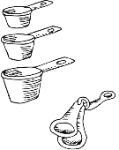

Home
Ingredient Converter
Recipe Creator
Cooking Timer
Inspirations
Bake with Cups & Spoons
>> Recipe Creator

Create my own Recipe
Enter Ingredient Items and Portions
Ingredient
Portion
My Ingredient List
Remove all items